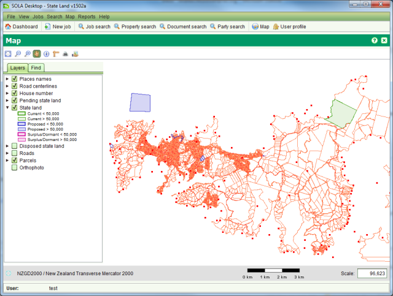

The SOLA Map Viewer allows you to navigate and interact with the
geospatial data managed by SOLA. It can be accessed from the Map >
Ctrl + Open Map menu or selecting 

The SOLA Map Viewer includes a toolbar for navigating and querying the map and two tabs: one Table of Contents that can be used to control the layers displayed on the map and one Find tab that can be used to find parcels in the map The tools provided for the SOLA Map Viewer are:
The SOLA Map Viewer can also support additional map tools for editing and related spatial tasks (e.g. Locate Application). These tools are described in the relevant How To sections
The scale of the map can be controlled using the Zoom in, Zoom out and Zoom to extent tools. The desired scale can also be entered directly into the Scale text box in the bottom right of the map.A scale bar is displayed to help determine distances on the map. Note that due to variations in screen resolution, the scale bar is indicative only and it should not be used to obtain accurate measurements from the map. As you pass the mouse over the map you will see map coordinates displayed in the bottom left corner under the Layers and Find tabs. This information can be used to determine coordinate locations on the map.
The Layers tab identifies the layers of geospatial data that can be displayed in the map. You can show or hide these layers by
checking or clearing the checkbox next to the layer name

By clicking the triangle beside each layer name you can also see the symbology used to illustrate the geospatial data at different map scales.
For example, when the map scale is below 2,500, Place names will be illustrated with a large red square. Between 2,500 and 90,000 a medium red
square is used and above 90,000 a small red square. Using the map scale to control the layer symbology ensures the map does not become overly
crowded with detail which might otherwise impair navigation or comprehension of the information displayed by the map.
The default layers available for SOLA include
You can use the Find tab to perform spatial searches to quickly locate parcels or other geospatial features in the map.
To use the Find, select the type of geospatial feature to search in the Search By drop down and start typing in the field provided.
Once you have entered enough characters (between 1 and 3), the search will begin listing values that match the search criteria.
To view one of the results, double click the result value in the result list and the map will zoom to the location of the selected feature and highlight it.

The Information Tool can be used to query geospatial features such as parcels, survey control, place names, roads, villages, etc. As geospatial features are often in close proximity or overlap, the Information Tool displays details for all features immediately surrounding the selected location. Click the appropriate tab to see details for the various layer features. Note that the tabs and the details displayed by the Information Tool can be reconfigured to match those required by the land administration agency

The Print Out Tool can be used to print out the visualised map in a pdf file format.
You can turn layers on/off if you want or don't want some of them to be in printout.
Then you can choose a layout: A3, A4, A5 but there can be defined as many as needed.
In the same dialog you can choose a scale. An estimated scale is already calculated from the map.
Click the Print button to generate a document containing the image of the map. Using the Report Viewer,
you can save the print in several formats including PDF, DOCX and HTML or print a hard copy For PDF format a PDF Viewer must be installed in the system.
Notice that everywhere in the software there is a map there is a Print button as well and that when printing – additionally - a service of type cadastrePrint
is registered in the service table and also marked as completed (if the map window is started by an application, this service is attached to the application,
completed Map Print service )
Note that the print templates (i.e. A3, A4 and A5) can be can be reconfigured to match those required by the land administration agency.

Also see